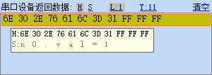
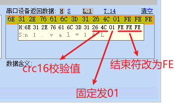

串口指令增加CRC校验
(单片机向串口屏发送的指令中增加crc校验，0.56及其以上上位机版本支持)
正常情况下，指令直接发送即可，不需要校验，如果您的项目对指令传输要求很严格必须开启校验请按照下列说明发送指令
切记注意：上位软件版本0.56开始才支持指令CRC，之前的版本是不支持的。
带校验或不带校验无需做任何配置，只需修改指令即可，您可以上一条指令带校验，下一条指令不带校验也是可以的。两种指令的区别如下：
结束符不同
普通指令结束符为\xFF\xFF\xFF
带校验的指令结束符为\xFE\xFE\xFE
CRC16校验算法
指令CRC16校验算法使用MODBUS的CRC16校验算法。其校验结果是2字节（16bit）的数据
需要校验的数据为所有指令数据，如果是带地址的指令，从地址开始算，不带地址的指令，就从指令第一个字节开始计算，结束符不计算在内。
如果您的单片机需要在指令中添加crc校验，那么单片机里的计算函数如下，您可以参考，也可以使用自己原有的MODBUS_CRC16代码。
//单片机MODBUS_CRC16代码
static U8 InvertUint8(U8 data)
{
int i;
U8 newtemp8 = 0;
for (i = 0; i < 8; i++)
{
if ( (data & (1 << i) ) != 0) newtemp8 |= (U8)(1 << (7 - i));
}
return newtemp8;
}
static U16 InvertUint16(U16 data)
{
int i;
U16 newtemp16 = 0;
for (i = 0; i < 16; i++)
{
if ( (data & (1 << i) ) != 0) newtemp16 |= (U16)(1 << (15 - i));
}
return newtemp16;
}
U16 CRC16_MODBUS(U8* data, int lenth)
{
int i;
U16 wCRCin = 0xFFFF;
U16 wCPoly = 0x8005;
U16 wChar = 0;
while (lenth > 0)
{
wChar = *data;
data++;
wChar = InvertUint8( (U8)wChar);
wCRCin ^= (U16)(wChar << 8);
for (i = 0; i < 8; i++)
{
if ((wCRCin & 0x8000) != 0)
{
wCRCin = (U16)( (wCRCin << 1) ^ wCPoly);
}else
{
wCRCin = (U16)(wCRCin << 1);
}
}
lenth=lenth-1;
}
wCRCin = InvertUint16(wCRCin);
return (wCRCin);
}
3.CRC16校验码写入方式
指令后面，结束符前面，加上2字节的CRC16校验码(HEX)+1字节的常数:0x01(HEX),相当于在指令和结束符中间插入了3个字节，CRC校验码的储存方式是小端模式,低位在前。
常规指令示例
n0.val=1\xFF\xFF\xFF

带crc指令示例
n1.val=1\x26\x4C\x01\xFE\xFE\xFE

如果屏幕收到带校验的指令后发现校验失败，会返回错误：0x09 0xff 0xff 0xff